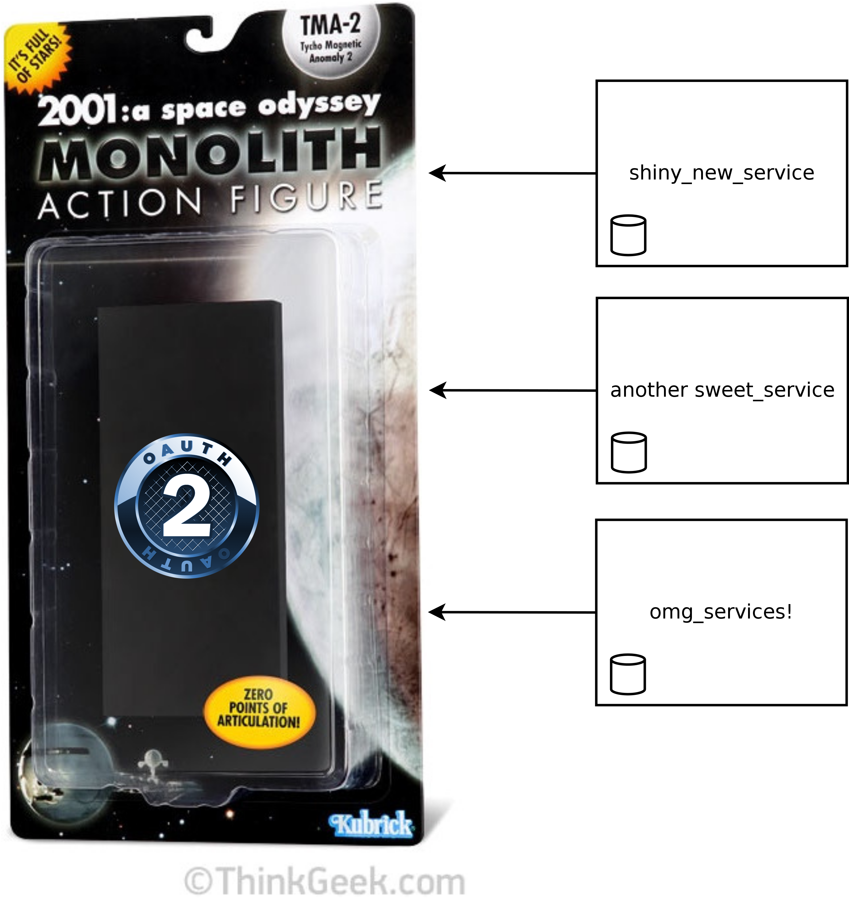

Service Oriented Authentication
Service Oriented Authentication
Stumbling towards SOA
The story of CloudHDR
And some dabling with a client
SO Auth!
Much entication
Wow
Doge pic goes here
My original app

A collection of services

What if I can't split
everything up at once?
Start where you are

Add one service
Then add another

SOA, FTW!
Introducing
the Mc-SOA*
Monolith Centric
Service Oriented Architecture
*Not affiliated with McDonalds Corp in any way.
Outline
- Context, Goals & Requirements
- Introduction to SOAuth
- Provider Implementation
- Client Implementation
A bit about me |
|
Jeremy Greendrummer, coder, entrepreneur, photographer, brewerorganizer of OkcRuby.org |
|

|
@jagthedrummer jeremy@octolabs.com http://www.octolabs.com/ |
CloudHDR
HDR Photo Processing Automation
HDR == High Dynamic Range
Why HDR?
You don't want this:

You want this!
Goals & Reqs
Goals & Reqs
- Small focused apps
- Single sign on/off
- Minimize code duplication
- Support a variety of app/service types
- Friendly to people and robots
Service Oriented Authentication
Service Oriented Authentication

OAuth(2)

An open standard for delegated authorization
A Brief Intro
Or Review


Provider Implementation
Provider Implementation
Client Implementation
Client Implementation
Wrap Up
Wrap Up
- Understand your requirements
- Set up an OAuth provider
- Build services as OAuth clients
- Enjoy your SOA!
Thanks For Watching!
|
@jagthedrummer jeremy@octolabs.com |
|